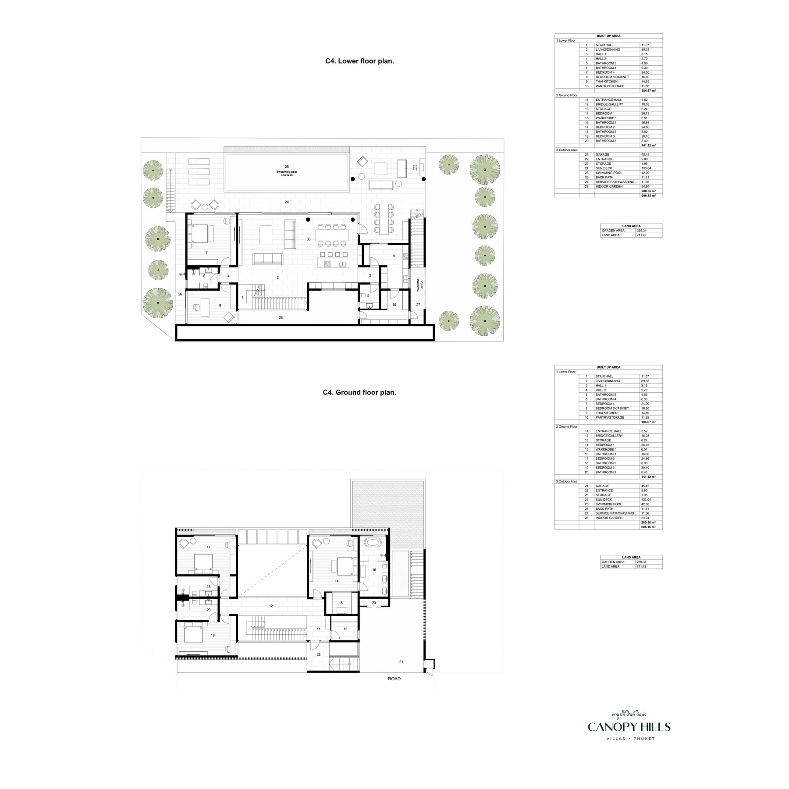
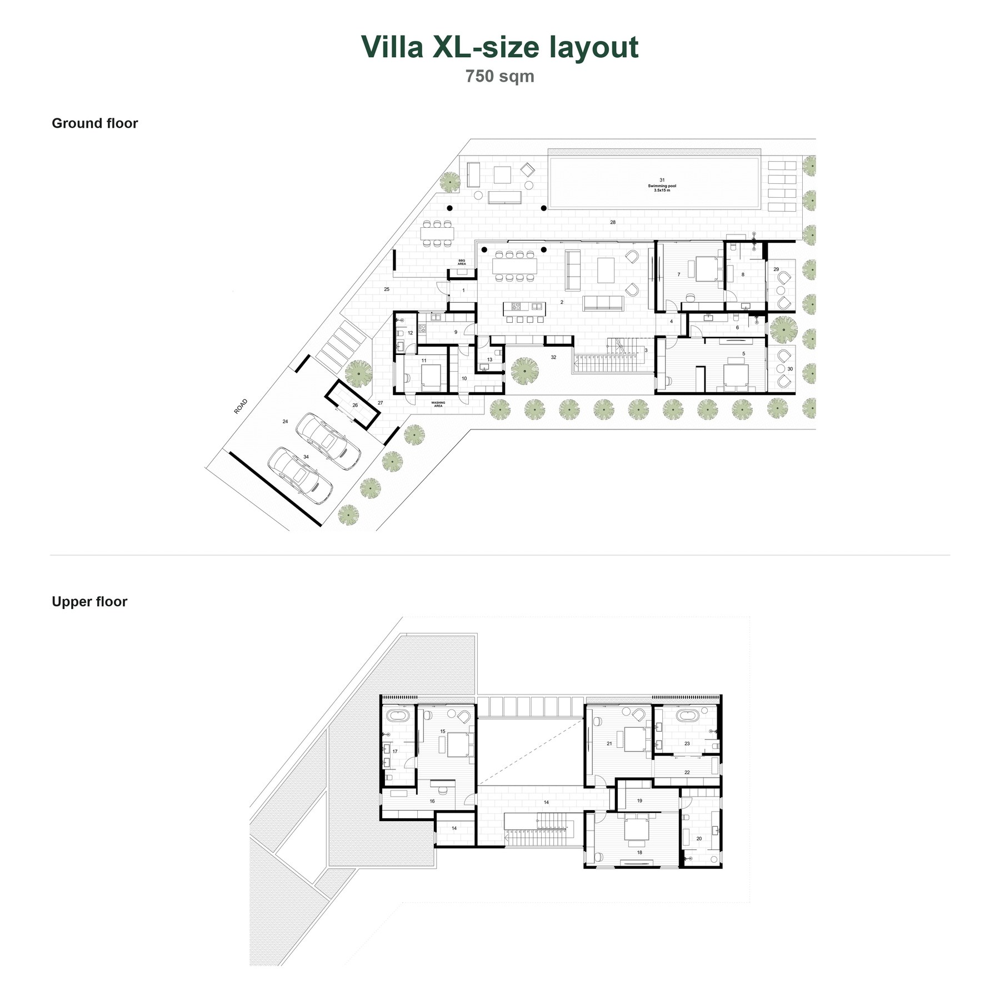

Только 9 видовых резиденций на холме
Canopy Hills проще продавать не как очередной village, а как редкий видовой продукт. Клиент получает private hillside residence, а не одну из сотен похожих вилл.
Для агента это важная точка отличия: проект хорошо объясняется клиентам, которые ищут дом для жизни, семьи, приватности и долгосрочной ценности.


Открытые виды: долина, озера, холмы и закат
На Пхукете очень мало новых проектов с настоящими открытыми видами. Большая часть рынка конкурирует похожими планировками, фасадами и обещаниями, а вид нельзя добавить после покупки.
Видовая позиция помогает клиенту быстро понять, почему Canopy Hills нельзя сравнивать только по цене за квадратный метр.


Юзабельные участки и безопасность склона
Для hillside villas это принципиально. Часто дом строится на части участка, а остальная земля уходит в склон и почти не используется. В Canopy Hills участок работает: сад, террасы, бассейн, парковка, приватность и family outdoor scenarios.
Вторая важная история - безопасность. За счет структуры, которая покрывает участок, решение помогает снижать риски намокания грунта, подтопления и движения/схода грунта на склоне.


650-750 м², спальни 20-30 м²
Планировки сделаны не как compact holiday villa. У каждого члена семьи есть нормальное личное пространство, плюс общие зоны, рабочие/многофункциональные комнаты и сервисные зоны.
Для клиента это аргумент daily comfort: дом удобен не только на просмотре, но и в реальной жизни на острове.


Гостиная с потолком 7 м
На просмотре это один из самых сильных emotional proof points. Клиент видит, что это не просто метраж, а дом с уровнем и пространством для семьи.
Связка вида, высоты и большой гостиной помогает Canopy Hills отличаться от стандартных вилл.


Инвестиционная привлекательность
Близость международных школ поддерживает спрос на долгосрочную аренду от семей, которым нужен качественный дом на год и дольше. Это более устойчивый residential demand, менее зависимый от сезонного туризма и daily rental competition.
Вторая опора - уникальность. Видовых проектов на Пхукете очень мало; на фоне множества похожих вилл редкий hillside view residence лучше объясняется покупателю и имеет более ясную логику капитализации.


Семейная инфраструктура в 10-15 минутах
Рядом международные школы, гольф, марины, спорт, теннис, конный спорт, ice arena/каток и другие активности, которые важны семьям, живущим на Пхукете постоянно.
Это помогает агенту объяснить проект не только через BISP, но и через полный family lifestyle: школа, спорт, здоровая среда, инфраструктура и удобная логистика.


Комфорт и сервисные зоны для долгой жизни
В доме предусмотрены большие laundry/service spaces, тайская кухня, отдельная гардеробная для сумок и обуви у входа, а также крытая зона около 80 м² рядом с бассейном с прямым доступом в гостиную и тайскую кухню.
Плюс шумо- и теплоизоляция, материалы и инженерия, рассчитанные на повседневную жизнь в тропическом климате.


L-size: 650 м², 4+1 спальни
Подходит семье, которой нужен полноценный дом без чрезмерного масштаба: спальни, кабинет/study, гостиная, террасы, бассейн, сервисные зоны и приватность.

XL-size: 750 м², 5+1 спален
XL-size дает запас пространства на годы вперед: 5 спален, дополнительная комната, большие общие зоны, outdoor-сценарии и сервисные зоны.
